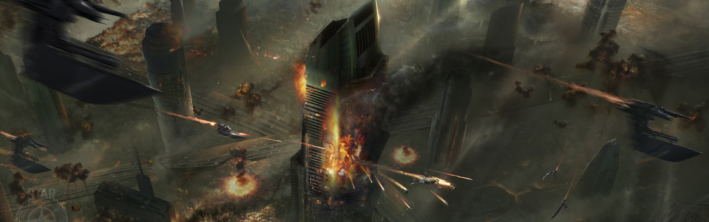

SYSTEM: TIBER

Excurs - System: Tiber
Der Reiseführer für Tiber kann mit einem einfachen Satz zusammengefasst werden: Tu es nicht. Als Schauplatz unzähliger Schlachten zwischen Menschen und Vanduul ist Tiber eine blutende Wunde, die kein Anzeichen von Heilung zeigt. Tiber wurde erstmals durch UNE-Forscher des Projekts Far Star im Jahre 2474 kartographiert. Als Heimat eines Standard K-Typ-Hauptsequenzsterns, der von zwei kleinen Planeten umkreist wird, besaß Tiber keine neuen exotischen Ressourcen oder strategischen Sprung-Verbindungen, sodass das System nur langsam besiedelt wurde. Kleinere Bergbauunternehmen, die sich über die günstigeren Genehmigungen und Gebietsrechte freuten, siedelten sich stattdessen an.
Das System existierte hauptsächlich als Zwischenstopp für Reisende nach Orion bis zum 27. Jahrhundert, als die Klans der Vanduul begannen, Orion mit zunehmender Wildheit und Häufigkeit zu attackieren. Tiber wurde zu einem sekundären Sammelpunkt für Militärkräfte, welche zurückfielen und ihre Schiffe reparierten, bevor sie zurück an die neue Front gingen.
Nach der Schlacht von Orion im Jahre 2712 gab das UEE das System auf und verstärkte Tiber als nächste Frontlinie, in Erwartung, dass die Vanduul schnell folgen würden. Sie kamen jedoch nicht. Die Vanduul-Klans blieben in Orion und begannen damit, das System seiner Ressourcen zu berauben. Sie schienen den Sprungpunkt nach Tiber nicht zu kennen oder sie interessierten sich nicht dafür. Das änderte sich im Jahr 2726, als eine Patrouille der UEE-Navy eine einzelne Vanduul Blade im System antraf. Die Blade schaffte es, durch einen Sprungpunkt in ein damals unbekanntes System zu entkommen. Innerhalb desselben Jahres begann ein Klan mit Angriffen auf das System.
Der Krieg erreichte Tiber schlussendlich 2732 in Form eines lang andauernden, militärischen Konfliktes, der als die Belagerung von Tiber bekannt wurde. In den vier Jahre lang dauernden Gefechten versuchte das UEE verzweifelt, sich einzugraben und das System gegen die eindringenden Vanddul zu verteidigen. Das Militär warf alles, was es hatte gegen die Vanduul und verlor mehrfach beinahe das System bis die Vanduul im Jahre 2736 die Linie vollständig durchbrachen.
Die Niederlage kam so schnell und unerwartet, dass das Militär nicht darauf vorbereitet war. Während sich die Navy-Kräfte in ein sicheres UEE-System zurückzogen, waren sie nicht dazu in der Lage, eine Verteidigung in Virgil zu errichten. All diejenigen, die hofften, dass die Vanduul wieder am Sprungpunkt stoppen würden, wie sie es bereits zuvor in Orion getan hatten, wurden schmerzlich enttäuscht. Die Vanduul überrannten Virgil, als sie dem UEE nachjagten und eroberten es binnen eines Jahres ebenfalls.
Tomb ist jedoch kein dauerhafter Friedhof: Die Wracks, die sich hier ansammeln, werden durch gewaltige Vanduul-Harvester verschlungen. Diese mechanischen Monster verschlingen alle Formen von Materie und konvertieren sie in nutzbare Materialien für die Vanduul-Kriegsmaschinerie. Die in Tiber anzutreffenden Harvester haben einen schrecklichen Doppelzweck. Sie scheinen der Ursprung neuerer Harvester zu sein, die auf menschliche Kolonien während Raubzügen losgelassen wurden. Alles, von den Wracks der Raumschiffe bis hin zu den Knochen der gefallenen Soldaten, füttert am Ende den Feind, den sie besiegen wollten.
Die Welt ist auch Heimat zahlloser Kriegslager der Vanduul, spartanische, temporäre Lager, die von den dauerhaft umherziehenden Klans genutzt werden. Während Menschen die Umwelt von Tomb nicht sehr einladend finden würden, scheinen die Vanduul im Klima des Planeten zu gedeihen und interessieren sich anscheinend nicht für die mit Trümmern gezeichnete Oberfläche. Eines dieser Lager aufzusuchen, wäre reiner Selbstmord für einen Menschen. Freigegebene Berichte von versuchten Landungen der Marines geben jedoch ein solides Wissen über das übliche Layout dieser Lager.
Während Tomb ein attraktives Ziel für hoffnungsvolle Schrottsammler zu sein scheint, sollte man gewarnt sein, dass es keine bekannten Berichte über eine erfolgreiche Landung auf der Planetenoberfläche gibt. Reisende sind gewarnt, jeden Versuch einer Landung zu unterlassen. Das UEE war nie dazu in der Lage, eine Landezone auf Tomb einzurichten und so lange man nicht Teil eines unglücklichen Marine-Trupps ist, hat man wenig Chancen, die Oberfläche überhaupt lebend zu erreichen. Reisewarnung Reisen Sie unter keinen Umständen in das Tiber System. Streitkräfte der Vanduul haben sich hier mit einer dauerhaften Besatzung eingerichtet.
„Ich habe so etwas noch nie gesehen. Diese… Maschinen… wenn man sie so nennen kann, wie sie Schiffe und Körper verschlangen… es war schrecklich. Die Geräusche, die sie machten, das Knirschen des Metalls und das surren der Klingen… man konnte es unter seiner Haut spüren… Ich hoffe, so etwas nie wieder hören zu müssen.“ – Ein unbekannter Minenarbeiter der für das ignorieren eines militärischen Befehls auf der Flucht von Tiber verhaftet wurde. 2801
Das System existierte hauptsächlich als Zwischenstopp für Reisende nach Orion bis zum 27. Jahrhundert, als die Klans der Vanduul begannen, Orion mit zunehmender Wildheit und Häufigkeit zu attackieren. Tiber wurde zu einem sekundären Sammelpunkt für Militärkräfte, welche zurückfielen und ihre Schiffe reparierten, bevor sie zurück an die neue Front gingen.
Nach der Schlacht von Orion im Jahre 2712 gab das UEE das System auf und verstärkte Tiber als nächste Frontlinie, in Erwartung, dass die Vanduul schnell folgen würden. Sie kamen jedoch nicht. Die Vanduul-Klans blieben in Orion und begannen damit, das System seiner Ressourcen zu berauben. Sie schienen den Sprungpunkt nach Tiber nicht zu kennen oder sie interessierten sich nicht dafür. Das änderte sich im Jahr 2726, als eine Patrouille der UEE-Navy eine einzelne Vanduul Blade im System antraf. Die Blade schaffte es, durch einen Sprungpunkt in ein damals unbekanntes System zu entkommen. Innerhalb desselben Jahres begann ein Klan mit Angriffen auf das System.
Der Krieg erreichte Tiber schlussendlich 2732 in Form eines lang andauernden, militärischen Konfliktes, der als die Belagerung von Tiber bekannt wurde. In den vier Jahre lang dauernden Gefechten versuchte das UEE verzweifelt, sich einzugraben und das System gegen die eindringenden Vanddul zu verteidigen. Das Militär warf alles, was es hatte gegen die Vanduul und verlor mehrfach beinahe das System bis die Vanduul im Jahre 2736 die Linie vollständig durchbrachen.
Die Niederlage kam so schnell und unerwartet, dass das Militär nicht darauf vorbereitet war. Während sich die Navy-Kräfte in ein sicheres UEE-System zurückzogen, waren sie nicht dazu in der Lage, eine Verteidigung in Virgil zu errichten. All diejenigen, die hofften, dass die Vanduul wieder am Sprungpunkt stoppen würden, wie sie es bereits zuvor in Orion getan hatten, wurden schmerzlich enttäuscht. Die Vanduul überrannten Virgil, als sie dem UEE nachjagten und eroberten es binnen eines Jahres ebenfalls.
Grinder
Bis zum heutigen Tag ist das System von den Narben des Krieges gezeichnet. Zerstörte Stationen, Schiffe und Trümmer übersäen das All und die Planeten. Das Militär des UEE hat das System offiziell als von den Vanduul kontrolliert erklärt, jedoch in den nachfolgenden Jahren nicht weniger als 19 größere Operationen durchgeführt, im Versuch, die Vanduul aus Tiber zu vertreiben. Gewaltige Flottenmanöver, Landungsversuche auf Tiber II und sogar „Clean Slate“-Operationen schlug fehl. Letztere sollten die Fähigkeit des Systems, eine militärische Besatzung zu versorgen, zerstören. Millionen starben bei diesen Versuchen und die ewig wachsenden Trümmerfelder sind mittlerweile legendär. Zahllose Zivilisten, die das Trümmerfeld als potentiellen Profit ansahen, erlitten das selbe Schicksal. Die Kämpfe gehen bis heute unvermindert weiter. Zusätzlich zu den regulären Aufklärungseinsätzen und den gelegentlichen Flotten-Aufklärungseinsätzen wird das System jedes Jahr von tausenden privaten Raumschiffkapitäne beflogen. Ob sie jetzt sich selbst in einem Kampf gegen eine Scythe beweisen wollen oder an den Ressourcen des Systems interessiert sind, ist ihr Schicksal doch immer das gleiche: Mahlgut für den Grinder.Tiber I
Tiber I ist ein kleiner, kompakter Planet nahe der Sonne Tibers. Die kohlendioxidhaltige Atmosphäre des Planeten ist atembar, aber die extreme Hitze der nahen Sonne würde das Leben hier zu einem unangenehmen Unterfangen machen, sogar ohne die andauernden Kämpfe. Der Orbit von Tiber I befindet sich außerdem genau innerhalb eines besonders schweren Asteroidengürtels, was die Erkundung noch schwieriger macht. UEE-Deep-Space-Fotografiestationen haben gleichwohl ungewöhnliche Anomalien im Wettersystem von Tiber I beobachtet, von denen Meteorologen glauben, dass sie für bessere Lebensbedingungen alle vier Jahre sorgen könnten.Tomb
Als trockene Wüstenwelt, bedeckt von fast blutrotem Kupferstaub, repräsentiert Tomb mehr als alles andere den unnachgiebigen Schlund der Vanduul-Kriegsmaschinerie. Der Großteil der Planetenoberfläche ist mit Wracks von Raumschiffen und früheren Kriegsmaschinen übersät. Die Überbleibsel zahlloser zurückgeschlagener Attacken des UEE, private Schiffe auf der Suche nach Profit und zerstörte Vanduul Technologie bedecken den gesamten Planeten.Tomb ist jedoch kein dauerhafter Friedhof: Die Wracks, die sich hier ansammeln, werden durch gewaltige Vanduul-Harvester verschlungen. Diese mechanischen Monster verschlingen alle Formen von Materie und konvertieren sie in nutzbare Materialien für die Vanduul-Kriegsmaschinerie. Die in Tiber anzutreffenden Harvester haben einen schrecklichen Doppelzweck. Sie scheinen der Ursprung neuerer Harvester zu sein, die auf menschliche Kolonien während Raubzügen losgelassen wurden. Alles, von den Wracks der Raumschiffe bis hin zu den Knochen der gefallenen Soldaten, füttert am Ende den Feind, den sie besiegen wollten.
Die Welt ist auch Heimat zahlloser Kriegslager der Vanduul, spartanische, temporäre Lager, die von den dauerhaft umherziehenden Klans genutzt werden. Während Menschen die Umwelt von Tomb nicht sehr einladend finden würden, scheinen die Vanduul im Klima des Planeten zu gedeihen und interessieren sich anscheinend nicht für die mit Trümmern gezeichnete Oberfläche. Eines dieser Lager aufzusuchen, wäre reiner Selbstmord für einen Menschen. Freigegebene Berichte von versuchten Landungen der Marines geben jedoch ein solides Wissen über das übliche Layout dieser Lager.
Während Tomb ein attraktives Ziel für hoffnungsvolle Schrottsammler zu sein scheint, sollte man gewarnt sein, dass es keine bekannten Berichte über eine erfolgreiche Landung auf der Planetenoberfläche gibt. Reisende sind gewarnt, jeden Versuch einer Landung zu unterlassen. Das UEE war nie dazu in der Lage, eine Landezone auf Tomb einzurichten und so lange man nicht Teil eines unglücklichen Marine-Trupps ist, hat man wenig Chancen, die Oberfläche überhaupt lebend zu erreichen. Reisewarnung Reisen Sie unter keinen Umständen in das Tiber System. Streitkräfte der Vanduul haben sich hier mit einer dauerhaften Besatzung eingerichtet.
Ein Flüstern im Wind
„Es ist unsere Zeit. Die Linie wurde gezogen und zum ersten Mal wird der Feind unsere Entschlossenheit im Kampf spüren. Wenn sie gegen uns pressen, pressen wir zurück. Sie werden lernen, dass die Menschheit aufgehört hat, davon zu laufen.“ – Großadmiral Tesca Halimeade, kommandierender Offizier der UEE Navy Kräfte in Tiber, 2735 (im Kampf getötet)„Ich habe so etwas noch nie gesehen. Diese… Maschinen… wenn man sie so nennen kann, wie sie Schiffe und Körper verschlangen… es war schrecklich. Die Geräusche, die sie machten, das Knirschen des Metalls und das surren der Klingen… man konnte es unter seiner Haut spüren… Ich hoffe, so etwas nie wieder hören zu müssen.“ – Ein unbekannter Minenarbeiter der für das ignorieren eines militärischen Befehls auf der Flucht von Tiber verhaftet wurde. 2801